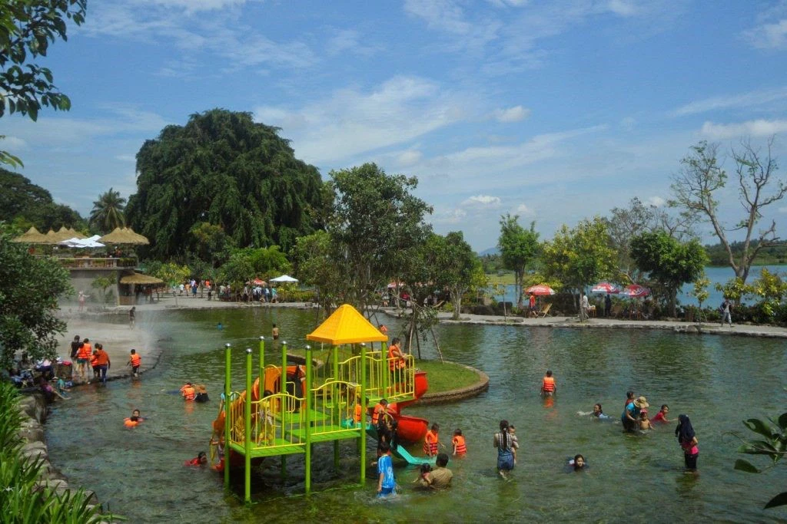
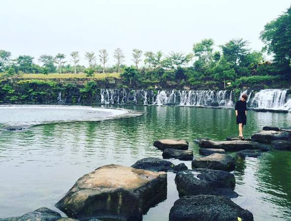

Suối mơ ở đâu?
Khu du lịch Suối Mơ ở Đồng Nai, cách TP Hồ Chí Minh khoảng chừng hơn 100km. Để đến được đây, bạn không mất quá nhiều thời gian di chuyển. Bên cạnh đó, nơi đây còn sở hữu không gian rộng rãi, thoáng mát, rất thích hợp để tổ chức những buổi picnic, dã ngoại, tham quan và nghỉ ngơi. Đồng thời là địa điểm vui chơi, giải trí thu hút nhiều gia đình vào những ngày nắng nóng cuối tuần.
Thời điểm thích hợp để đi du lịch
Du khách không cần quá lo lắng về thời điểm để tham quan khu du lịch này bởi thời tiết ở Đồng Nai khá giống với TP HCM, nắng nóng quanh năm. Tuy vậy, để tránh những cơn mưa bất chợt thường có thể gây cản trở hoạt động ngoài trời, du khách nên lên kế hoạch cũng như chuẩn bị những phương án dự phòng nếu gặp thời tiết xấu. 
Di chuyển đến khu du lịch Suối Mơ - Đồng Nai
Nếu chủ động được phương tiện di chuyển thì từ TP HCM, đến khu du lịch này bằng ô tô là thuận tiện cũng như an toàn nhất cho cả gia đình. Du khách có thể sử dụng xe cá nhân hoặc thuê taxi. Nếu đi nhóm đông, không nên đi xe máy vì vừa thiếu an toàn mà vừa vất vả (đường khá xa, thời tiết nóng bức).Từ trung tâm TP HCM, du khách tìm đường ra QL1A. Sau đó, lái xe về hướng Vũng Tàu. Khi đến ngã ba Dầu Giây thì rẽ trái vào QL20, hướng lên Đà Lạt. Đi thẳng, qua UBND huyện Đình Quán thì rẽ phải vào đường Trà Cổ. Sau đó, chạy thêm khoảng 5 km nữa theo bảng chỉ dẫn đến khu du lịch Suối Mơ.Nếu không chủ động được phương tiện di chuyển, du khách có thể đi bằng xe khách hoặc xe buýt.
Lợi ích của việc đi du lịch Sinh Thái
Những lợi ích từ du lịch sinh thái Du lịch sinh thái là gì? Khái niệm về du lịch sinh thái xuất hiện từ nâm 1991 Du lịch sinh thái là loại hình du lịch diễn ra trong các vùng có hệ sinh thái tự nhiên còn bảo tồn khá tốt nhằm mục tiêu nghiên cứu, chiêm ngưỡng, thưởng thức phong cảnh, động thực vật cũng như các giá trị văn hoá hiện hữu.
Cần chuẩn bị gì cho chuyến đi
Một khi lựa chọn du lịch sinh thái - dù là đi tour hay tự túc, điểm đến phổ biến hay hoang sơ, thì khả năng sai sót, nguy hiểm vẫn có thể xảy đến bất kỳ lúc nào. Dưới đây là những nhóm đồ cần thiết để gia đình có một chuyến đi an toàn và trọn vẹn.